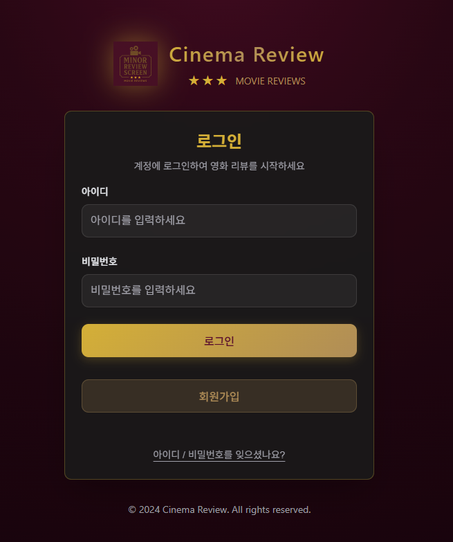
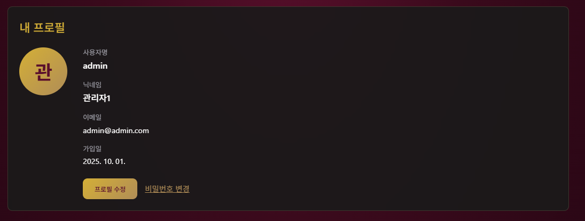
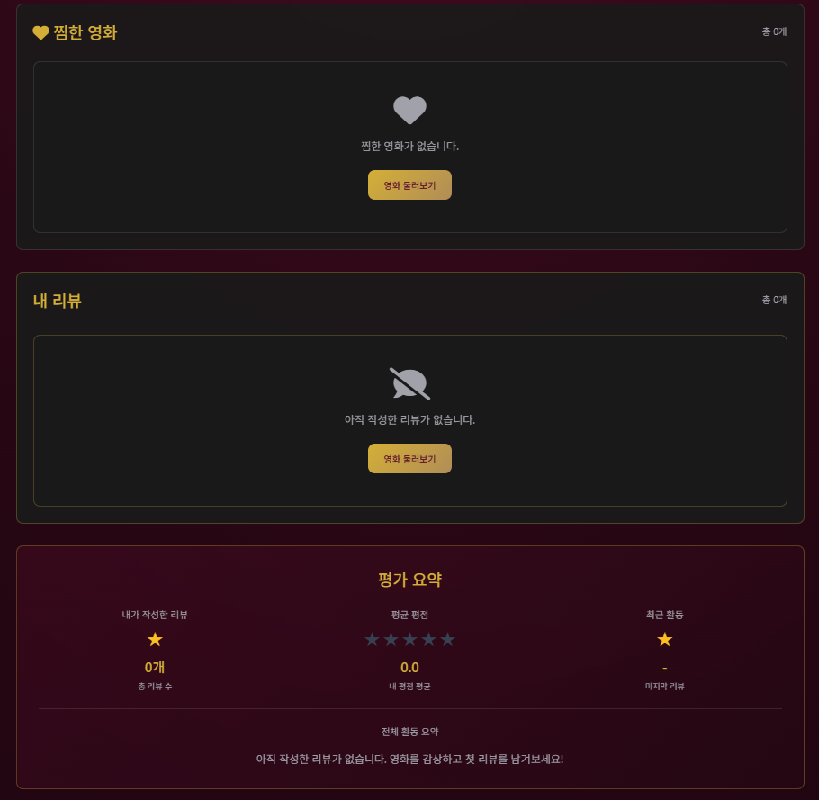
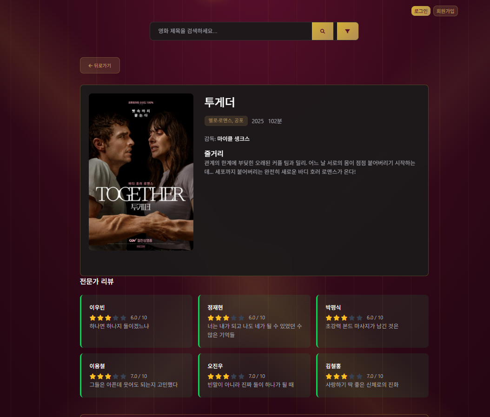
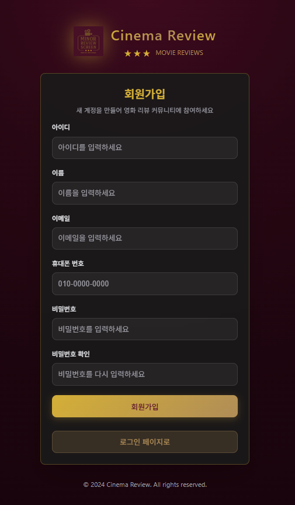
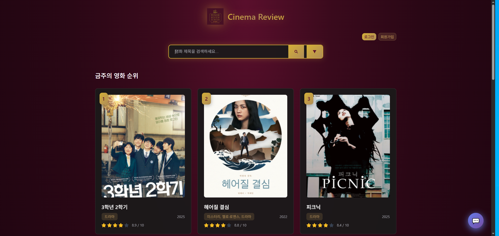
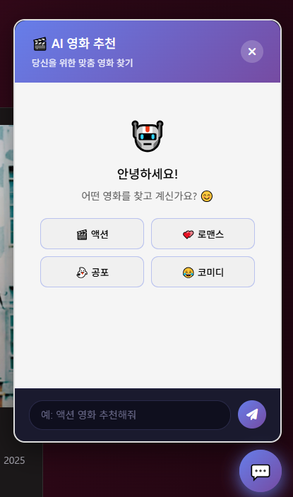

Cinema Review
스마트한 영화 리뷰, 학생들이 만든 플랫폼
시네21 크롤링 데이터와 TMDB API를 활용한 지능형 영화 리뷰 시스템

스마트한 영화 리뷰, 학생들이 만든 플랫폼
시네21 크롤링 데이터와 TMDB API를 활용한 지능형 영화 리뷰 시스템
Cinema Review는 시네21 크롤링 데이터와 TMDB 기반의 지능형 검색을 결합한 영화 리뷰 플랫폼입니다.
검색 → 부족하면 실시간 크롤링으로 DB 적재 → 목록/상세/리뷰/찜 API로 프론트 표출.
주간 랭킹/검색어 기반 확장 크롤링으로 최신성 확보.
“전쟁 배경 액션”, “감성 로맨스”처럼 자연어로 질의하면 TMDB API + 키워드 사전으로 후보를 수집하고 간단 응답 생성.
회원가입/로그인, 마이페이지(내 리뷰/찜), 별점+200자 리뷰, 중복 리뷰 방지, 페이지네이션 등 기본기를 갖춘 사용자 경험.
영화/리뷰/사용자 관리와 크롤링 트리거, 동기화, 신고 처리 등 운영 편의 기능을 제공.
Cinema Review의 핵심 기능들을 소개합니다
제목 검색, 장르/국가/연도/평점 범위 필터, 최신/제목/평점 순 정렬, 페이지네이션 지원.
별점 + 200자 리뷰, 수정/삭제, 중복 리뷰 방지, 상세 페이지 리뷰 페이지네이션.
상세에서 찜/해제 토글, 마이페이지에서 내 찜/내 리뷰 집계 및 관리.
회원가입/로그인, 아이디 찾기/비밀번호 재설정, 안전한 비밀번호 해시 저장.
검색 결과가 부족하면 키워드/ID로 상세 크롤링 → DB 저장, 중복/에러/타임아웃 처리.
자연어 설명형 질의 → TMDB 후보 수집 → 간단한 자연어 답변과 추천 리스트 반환.
Cinema Review의 주요 화면들을 직접 확인해보세요

깔끔하고 직관적인 인터페이스로 설계된 로그인 시스템입니다. 사용자는 간편하게 계정을 만들고 로그인하여 개인화된 영화 리뷰 경험을 시작할 수 있습니다.


사용자의 모든 활동을 한눈에 볼 수 있는 개인 대시보드입니다. 찜한 영화와 작성한 리뷰를 효율적으로 관리할 수 있습니다.

영화에 대한 풍부한 정보와 실제 사용자들의 리뷰를 확인할 수 있습니다. 포스터, 줄거리, 감독 정보와 함께 다양한 평점을 한번에 볼 수 있습니다.

몇 단계만으로 완료되는 사용자 친화적인 회원가입 프로세스입니다. 필요한 정보만 입력하여 빠르게 계정을 생성할 수 있습니다.

실시간으로 업데이트되는 영화 랭킹 시스템으로 가장 인기 있는 영화들을 확인할 수 있습니다. 검색 기능과 필터를 통해 원하는 영화를 빠르게 찾을 수 있습니다.

유저 친화적인 유용한 챗 봇 기능입니다 영화의 줄거리를 통해서도 영화를 검색하고 추천받을 수 있습니다
Cinema Review를 구축하는 데 사용된 기술들
시맨틱 마크업과 접근성(ARIA)을 기반으로 페이지 구조를 설계하고, SEO 친화적인 문서 아키텍처의 토대를 제공합니다.
유틸리티 클래스와 컴포넌트 스타일을 정의하고, 그라디언트·블러·애니메이션으로 브랜드 톤을 구현합니다. 반응형 레이아웃을 통해 다양한 화면에서 일관된 UI를 유지합니다.
네비게이션 토글, 부드러운 스크롤, IntersectionObserver 기반 스크롤 애니메이션, 이미지 모달·리플 효과 등 인터랙션 로직을 담당합니다.
크롤링된 영화·리뷰·사용자 데이터를 정규화해 저장하고, 인덱싱으로 조회를 최적화하며 주기적 업데이트에 대비한 스키마 설계를 적용합니다.
시네21 크롤링과 데이터 전처리(pandas), 텍스트/메타데이터 정규화, TMDB 연동을 담당합니다. 필요 시 경량 API 서버(Flask/FastAPI)와 배치 스크립트로 운영 자동화를 구성합니다.
BeautifulSoup/Requests(+Selenium)로 목록·상세 페이지를 수집하고, 중복 제거/재시도/에러 로깅, robots 규정 준수와 스케줄링(크론)로 안정적으로 데이터가 갱신되도록 설계했습니다.
크롤러·백엔드·DB를 컨테이너로 분리하고 docker-compose로 개발/배포 환경을 일원화합니다. 이미지 버전 고정과 .env 관리, 헬스체크로 재현성과 안정성을 확보합니다.
경량 고성능 Python 웹 프레임워크로 REST API를 제공합니다. Uvicorn으로 개발/운영.
ORM으로 모델/스키마를 관리하고, PyMySQL 드라이버로 MySQL과 연결합니다.
시네21 목록/상세 수집, 예외/재시도, 타임아웃 처리로 신뢰성 있는 크롤링을 구현합니다.
키워드 매칭과 외부 API 연동으로 설명형 검색을 지원합니다. 실제 API 키는 .env 환경변수로 안전하게 관리합니다.
frontend/backend/db를 컨테이너로 분리하고 compose로 통합 실행, Nginx 프록시와 캐싱으로 운영 효율성을 확보합니다.
프론트엔드 · 백엔드 · 데이터 계층으로 분리된 구조
주요 엔드포인트(예시)
| 메서드 | 엔드포인트 | 설명 |
|---|---|---|
| GET | /api/movies | 목록/검색/필터/정렬/페이지네이션 |
| GET | /api/movies/filter-options | 필터 옵션 조회 |
| POST | /api/reviews | 리뷰 생성(별점+텍스트) |
| POST | /api/auth/login | 로그인 (토큰 발급) |
| POST | /api/crawl/search | 시네21 검색/후보 수집 |
| POST | /ai/chat | 설명형 검색(옵션) |
※ 자세한 스펙은 서버 코드/문서에서 확인하세요.
Cinema Review를 만든 개발팀을 소개합니다
Frontend Developer
사용자 인터페이스 및 사용자 경험 설계
Backend Developer
서버 개발 및 API 구축
Database Engineer
데이터베이스 설계 및 관리
UI/UX Designer
시각적 디자인 및 사용자 경험 최적화 담당